Контракты пишем - код генерим
Как мы перестали CRUDошлепить
Забанов Александр
О себе
Забанов Александр
- Руководитель направления Backend в комании Веб/Практик
- 9+ лет в backend
- PHP : Bitrix, Laravel, Symfony, Yii2
- NodeJS : Nest, Express
- Балуюсь : Rust
План
- Зачем Contract First подход
- Как мы написали свою библиотеку для кодогенерации на Bitrix
Contract First подход
сначала создается контракт (машиночитаемый), а затем уже реализуется код
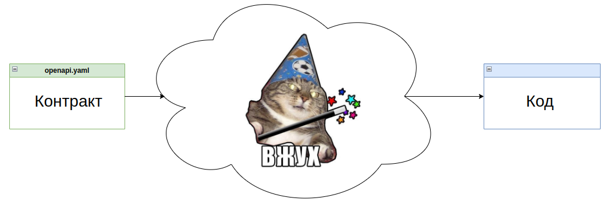
* по версии некоторых пмов
Давным давно...
- Верстка формировалась на беке
- “Контрактом” была устная договоренность
- Конфликты (GIT) между фронтом и беком
- Фронт должен знать
основы шаблонизаторов PHP FW
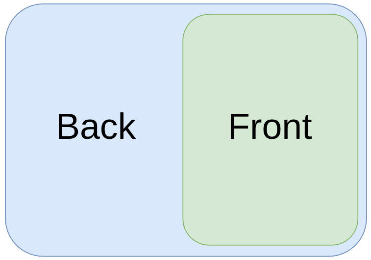
Code First
- Общение по API
- Точка истины - Контракт
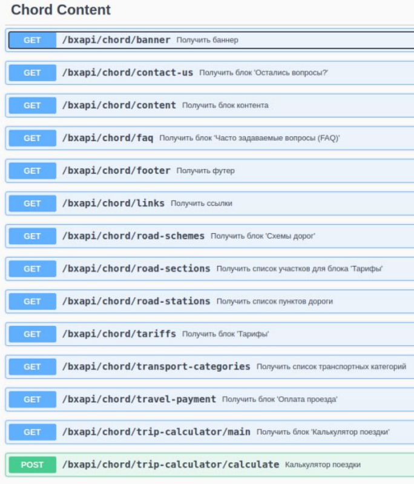
Code First
- Общение по API
- Точка истины - Контракт
- Генерируется на основе аннотаций
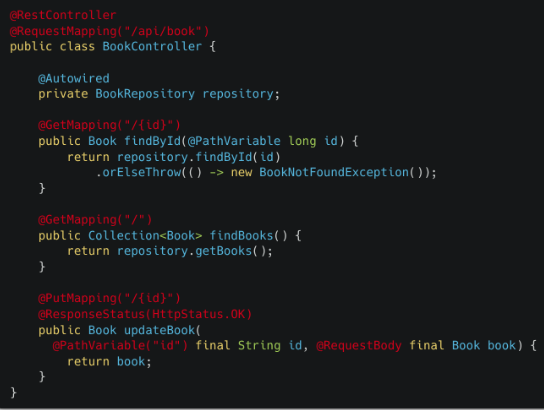
Code First
- Общение по API
- Точка истины - Контракт
- Фронт использует кодогенерации
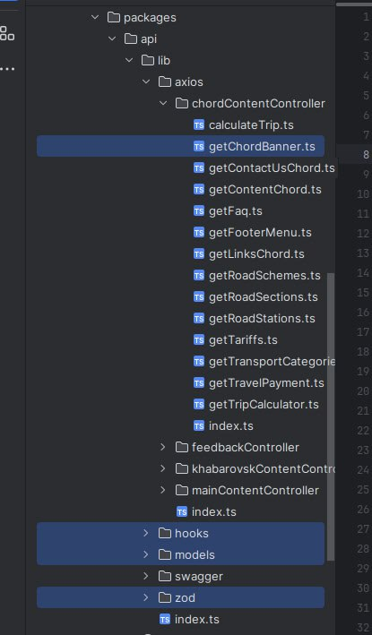
Кодогенерация фронта - KUBB
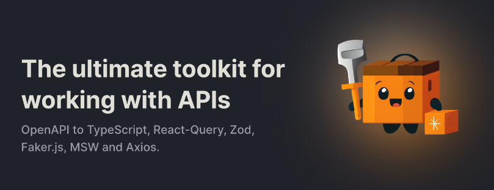
А чем хуже бек?
Генерация бека по контракту
Contract First
| Contract First |
Code First |
| На основе контракта генерируем или пишем код |
На основе (бэкенд) кода генерируем контракт |
| Контракт (например, OpenAPI) — первоисточник |
Код (например, контроллеры) — первоисточник |
Contract First позволяет
- Четкое и стабильное API-контракт (точка истины)
- Явное проектирование до реализации
- Возможность автоматической генерация кода
- Документация создается автоматически и всегда актуальна
- Контроль версионирования и изменений
- Автономная и параллельная разработка
Минусы
- Без автоматизации есть риски неконсистентности
- Не все любят писать контракты 🙃
Contract First
- Общение по API
- Первоочередно - Контракт
- Пишется вручную
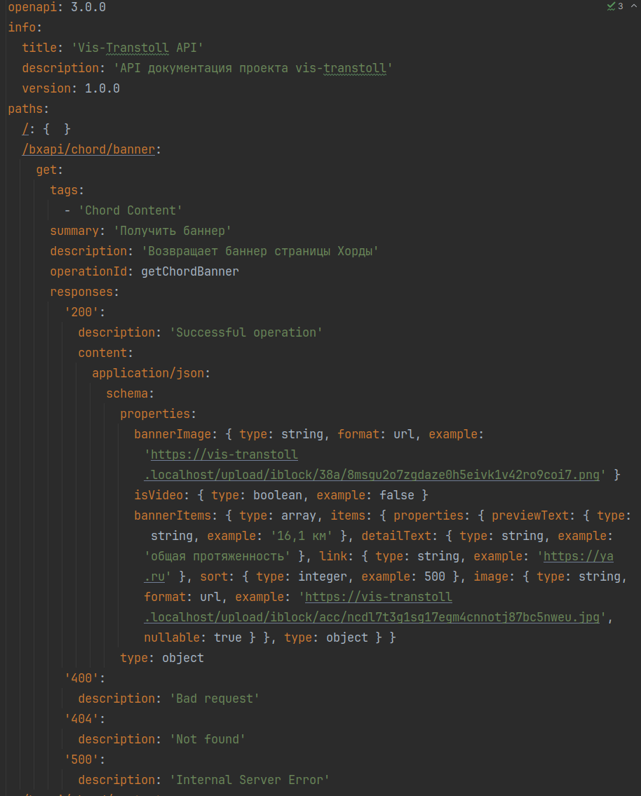
Contract First
- Общение по API
- Первоочередно - Контракт
- Пишется вручную
- Генерим в GPT ;)

Contract First
- Общение по API
- Первоочередно - Контракт
- Пишется вручную
- Генерим в GPT ;)
- Контракт в отдельной репе

Contract First
- Общение по API
- Первоочередно - Контракт
- Контракт в отдельной репе
- Mock-сервер
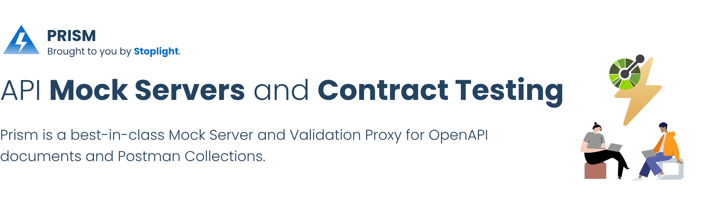
Mock-сервер - Prism
Цель: Убрать зависимость от тестовых площадок и бека
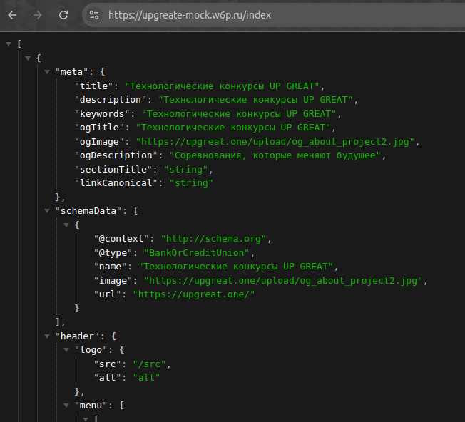
Альтернативы: Mockoon, WireMock, MSW, Microrocks
Contract First
- Общение по API
- Первоочередно - Контракт
- Контракт в отдельной репе
- Mock-сервер
- Валидаци контракта

Валидация - Spectral
Цель: Проверяет соответствие OpenAPI-документов спецификации и обеспечить единый стиль описания API
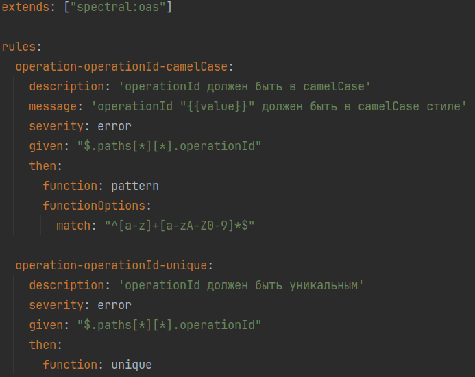
Пример: Проверка, чтобы все operationId были в стиле camelCase и уникальны
.spectral.yaml
Валидация - Spectral
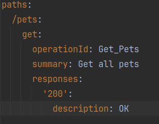
Результат:
3:7 error operationId "Get_Pets" должен быть в camelCase стиле operation-operationId-camelCase
Contract First
- Общение по API
- Первоочередно - Контракт
- Контракт в отдельной репе
- Mock-сервер
- Валидаци контракта
- Тестирование контракта
TODO: Контрактные тесты - DREDD
Цель: Контроль соответствия между документацией и реализацией API
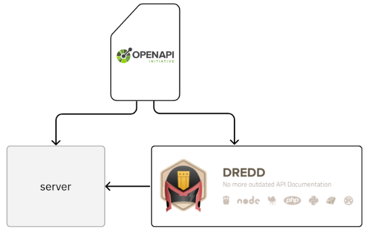
Contract First
- Общение по API
- Первоочередно - Контракт
- Контракт в отдельной репе
- Генерируем back, front, mock
А где его взять, этот ваш кодогенератор бека?
Что мы хотим от генератора?
-
Генерировал
- контроллеры
- модели
- дто
- эксепшены
- роут
- валидаци
- Ставился через composer
- Адаптирован под экосистему Bitrix
Что есть из готового?
- OpenAPI Generator
- Генерирует 👍🏻
- Ставится через composer 👎🏻
- Адаптирован под экосистему Bitrix 👎🏻
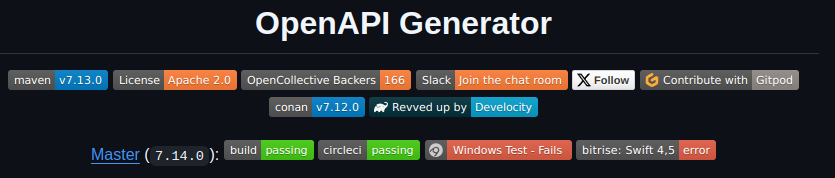
Что есть из готового?
- OpenAPI Generator
- Jane
- Генерирует 👍🏻
- Ставится через composer 👍🏻
- Адаптирован под экосистему Bitrix 👎🏻
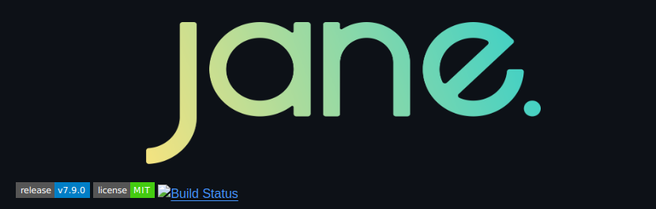
Что есть из готового?
- OpenAPI Generator
- Jane
- ИИ
С каким проблемами мы столкнулись
Проблема: Отсуствие готовых решение
- Небольшой выбор библиотек на PHP
- Для Bitrix таких 0
Проблема: Как избежать правок сгенерированного кода и куда прятать бизнес-логику
- Как не перезаписывать сгенерированный код?
- Как подружить с модульным монолитом?
- Генерировать модулИ на основе контракта?
Проблема: Формат ответа: JSON и Bitrix-структура
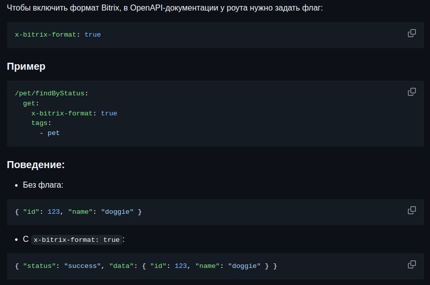
Итого: Наш опенсорс генератор бэкенда для Bitrix по OpenAPI
- Основан на jane-php
- Генерирует структуру
- Устраняет рутинное написание кода.
- Гарантирует соответствие API контракту.
- Сделан под экосистему Bitrix
- Быстрая установка
Авторы пакета
- Петр Кленкин
- Евгений Зорькин
- Александр Забанов
______ __ __
/\__ _\/\ \ /\ \
\/_/\ \/\ \ \___ __ __ ___ \_\ \
\ \ \ \ \ _ `\ /'__`\ /'__`\ /' _ `\ /'_` \
\ \ \ \ \ \ \ \ /\ __/ /\ __/ /\ \/\ \ /\ \L\ \
\ \_\ \ \_\ \_\\ \____\ \ \____\\ \_\ \_\\ \___,_\
\/_/ \/_/\/_/ \/____/ \/____/ \/_/\/_/ \/__,_ /